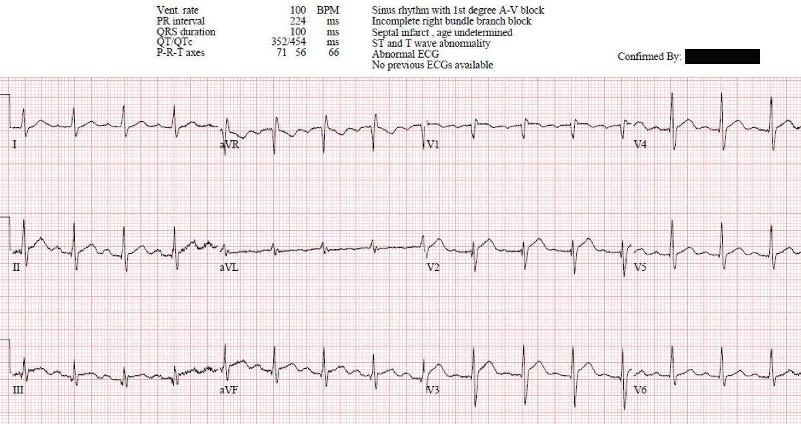
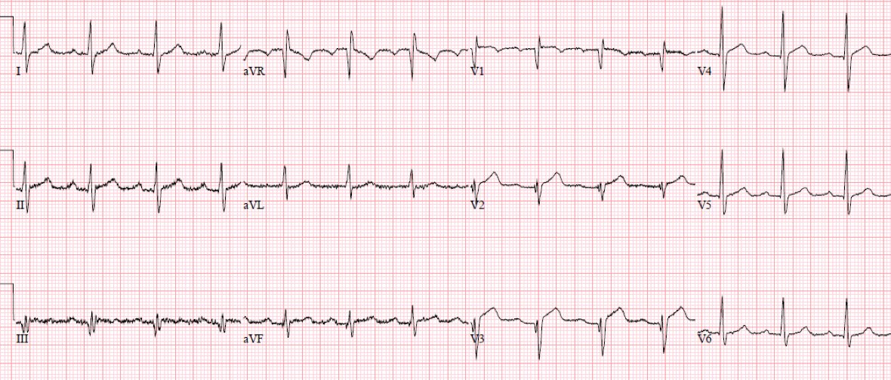
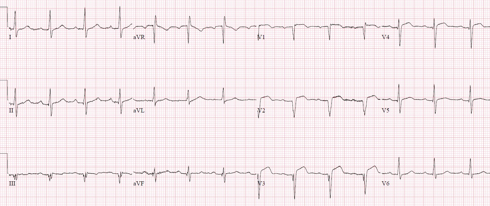
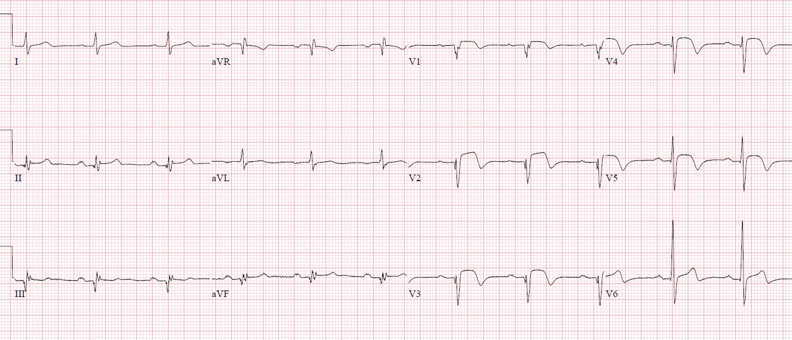
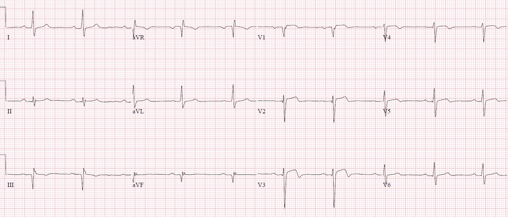

05/06/2022 — Đau ngực, troponin >50.000 nhưng LAD chỉ hẹp 30% trên phim chụp mạch vành: chẩn đoán là gì?
Bản dịch tiếng Việt của bài "Chest pain, trop >50,000 but only 30% LAD stenosis on angiogram: what’s the diagnosis?" – Dr. Smith’s ECG Blog. Giữ nguyên toàn bộ 6 hình ảnh của bản gốc.
Tác giả: Jesse McLaren, kèm bình luận của Grauer
Một người 60 tuổi bị đau ngực khi gắng sức kéo dài hai giờ, buồn nôn
và vã mồ hôi, rồi gọi đội cấp cứu ngoài viện (EMS). Dưới đây là điện tâm đồ đầu tiên khi đến bệnh viện,
các dấu hiệu sinh tồn bình thường, trừ tần số tim 100. Bạn nghĩ gì?


Có nhịp nhanh xoang ở mức ranh giới, blốc nhánh phải không hoàn toàn (IRBBB), trục bình thường,
tăng tiến sóng R bình thường nhưng có sóng Q nhỏ ở V2-3 (vốn không bao giờ được có),
và điện thế bình thường. Có ST chênh lên và sóng T tối cấp (hyperacute) ở V2-4, và
ST chênh lên nhẹ ở các chuyển đạo dưới. Nếu chỉ xét theo tiêu chuẩn STEMI thì bản ghi này ở mức ranh giới (đó
là lý do nó không được ghi là STEMI trong kết quả đọc cuối cùng của khoa tim mạch), nhưng
các dấu hiệu bổ sung của OMI (sóng Q bệnh lý và sóng T tối cấp) khiến bản ghi này
có giá trị chẩn đoán tắc LAD — sau nhánh chéo thứ nhất, nên không có tổn thương ở
thành bên và không có thay đổi soi gương (reciprocal) ở các chuyển đạo dưới.
Theo báo cáo của nhân viên cấp cứu ngoài viện, điện tâm đồ của họ (không được
scan vào hồ sơ bệnh án) cho thấy “ST chênh lên rõ ở thành trước”, nên bệnh nhân
được đưa thẳng vào phòng thông tim (cath lab), nơi ghi điện tâm đồ ở trên, lúc
bệnh nhân cho biết cơn đau đang giảm. Trên phim chụp mạch vành 25 phút sau
điện tâm đồ trên, có một tổn thương mờ và lệch tâm ở LAD đoạn giữa nhưng chỉ hẹp
30%, nên không làm PCI. Ngoài ra còn hẹp 85% một nhánh bờ
tù, tổn thương này được cho là không cấp tính và không góp phần vào
bệnh cảnh của bệnh nhân.
Đây là điện tâm đồ sau chụp mạch vành, cho thấy sóng Q ở V2-3 tiếp tục hình thành
và sóng T tối cấp đã “xẹp” bớt phần nào:


Troponin I độ nhạy cao (hs-troponin) lần đầu là 2400ng/L (bình thường <26 ở nam và
<16 ở nữ) và lần lặp lại 5 giờ sau là > 50.000 (giới hạn trên của
khoảng đo), kèm vô động vùng mỏm. Như vậy đây là một nhồi máu cơ tim rất lớn với
động mạch vành không tắc nghẽn (MINOCA). Nguyên nhân là gì?
8 giờ sau chụp mạch vành, bệnh nhân lại bị đau
ngực. Điện tâm đồ ghi lại:


Lúc này sóng R ở thành trước đã mất hoàn toàn, với sóng QS đầy đủ
ở V2-3 do nhồi máu thành trước đang tiến triển. Nhưng cũng có một sóng T tối cấp ở
V3 (T/QRS>0,36) cho thấy tắc cấp [1], kèm phần cuối sóng T đảo ngược ở
V2-4 gợi ý đã có tái tưới máu phần nào.
Bệnh nhân được đưa trở lại phòng thông tim, nhưng đến lúc
chụp mạch vành thì tổn thương LAD lại không gây tắc — dù lần này hẹp 60%.
Troponin vẫn ở mức >50.000 và mới chỉ 8 giờ sau biến cố
đầu tiên nên không thể dựa vào đó để nhận ra biến cố thứ hai. Nhưng dựa trên
triệu chứng, thay đổi điện tâm đồ và mức hẹp tiến triển, bệnh nhân được đặt stent
vào LAD đoạn giữa.
Đây là điện tâm đồ ngày hôm sau, cho thấy sóng T đảo ngược do tái tưới máu
(reperfusion T wave inversion):


Dưới đây là điện tâm đồ lúc ra viện ba ngày sau đó, cho thấy
sóng R ở thành trước xuất hiện trở lại:


Bệnh nhân ra viện với chẩn đoán STEMI dù điện tâm đồ chỉ ở mức ranh giới theo tiêu chuẩn STEMI và dù
hai lần chụp mạch vành đều cho thấy dòng chảy TIMI 3. Bệnh nhân không bị nhồi máu cơ tim thêm lần nào trong thời gian theo dõi.
MINOCA (nhồi máu cơ tim với động mạch vành không tắc nghẽn)
Thuật ngữ “STEMI”
được đồng nhất với tắc mạch vành cấp. Nhưng 25% các ca “Non-STEMI” bị tắc gần hoàn toàn hoặc
hoàn toàn mà tuần hoàn bàng hệ không đủ, với dòng chảy mất hoặc
giảm (TIMI 0-2) trên phim chụp mạch vành[1]. Và 15% các ca “STEMI” có động mạch thông
với dòng chảy TIMI 3 bình thường [2,3,4]
Rồi còn có những ca nhồi máu cơ tim
hẹp dưới 50% vào thời điểm chụp mạch, được xếp vào thuật ngữ
MINOCA. Như một bài báo gần đây đã tóm tắt, “Khoảng 6–10% bệnh nhân
có các đặc điểm của nhồi máu cơ tim cấp không cho thấy bằng chứng mạch bị tắc nghẽn
trên phim chụp mạch. Những năm gần đây, các bệnh nhân này được gộp nhóm là
biểu hiện nhồi máu cơ tim với động mạch vành không tắc nghẽn
(MINOCA). Chẩn đoán MINOCA dựa trên ba tiêu chuẩn chính: (1) bằng chứng
lâm sàng của nhồi máu cơ tim như đau ngực có triệu chứng, và thay đổi điện tâm đồ; (2) chụp
mạch vành cho thấy không hẹp / hẹp ≤50% động mạch vành thượng tâm mạc và; (3) không có
nguyên nhân rõ ràng của biểu hiện nhồi máu cơ tim cấp (AMI)…Có rất nhiều nguyên nhân gây MINOCA, trong đó
các nguyên nhân thường gặp được nêu là phá vỡ mảng xơ vữa mạch vành (bao gồm nứt vỡ
mảng xơ vữa, mòn mảng xơ vữa và nốt vôi hóa), bóc tách động mạch vành, co thắt mạch vành,
rối loạn chức năng vi mạch, thuyên tắc mạch vành, các tình trạng tăng đông.”[5]
Nói cách khác, chẩn đoán phân biệt đầu tiên của MINOCA là nhồi máu cơ tim do tắc
(OMI) — đã tự ly giải nhưng có nguy cơ tắc lại. Điều này bao gồm các tổn thương nhỏ
như ca này, hoặc không thấy hẹp rõ trong lòng mạch
ở những ca có bệnh lý ngoài lòng mạch như ca
này. Hoặc như bác sĩ Smith đã giải thích trong ca
này, “biểu hiện lâm sàng
đau ngực đột ngột, các dấu hiệu điện tâm đồ điển hình của tắc mạch (sóng T tối cấp trong
ca này), các dấu hiệu điện tâm đồ theo phân bố một động mạch vành, troponin tăng rồi giảm
với đỉnh trong khoảng điển hình của STEMI/OMI, và rối loạn vận động thành mới
ở vùng mà điện tâm đồ chỉ ra, phải được coi là do huyết khối
mạch vành. Mức độ hẹp không phải là yếu tố dự báo tốt về
huyết khối, và tổn thương thủ phạm có thể không nhìn thấy được. Ngay cả khi có hẹp
khít, đó cũng không phải bằng chứng của thủ phạm, vì nhiều người vốn đã có hẹp khít cố định
từ trước. Có thể có một chỗ hẹp khít mạn tính và một
tổn thương không tắc nghẽn bị huyết khối.”
Tương tự, trong ca được trình bày ở trên, điện tâm đồ cho thấy OMI LAD
đoạn giữa, đã tái tưới máu vào lúc chụp mạch lần đầu, rồi điện tâm đồ cho thấy
OMI tái phát và đã tái tưới máu vào lúc chụp mạch lần hai, và sau đó điện tâm đồ cho thấy
các thay đổi tái tưới máu như dự kiến sau chụp mạch. Troponin và kết quả siêu âm
tim cho thấy hậu quả của một ổ nhồi máu lớn, với vô động vùng mỏm tương ứng với các thay đổi điện tâm đồ. Nhưng thời điểm
chụp mạch đã không bắt được những lúc LAD bị tắc trước khi
tái tưới máu tự phát, và lại phát hiện tình cờ một chỗ hẹp nhánh bờ tù (OM).
Trong một nghiên cứu trên hơn 9.000 bệnh nhân MINOCA, 6,3% bị nhồi máu
cơ tim mới trong thời gian theo dõi. Trong số những người được chụp mạch lại, khoảng một nửa bị
MINOCA tái phát, nhưng nửa còn lại có bệnh động mạch vành
tiến triển.[6] Số liệu này chỉ gồm những người ra viện với chẩn đoán MINOCA và
bị nhồi máu cơ tim mới khi theo dõi, chứ không gồm những bệnh nhân như ca của chúng tôi ở trên, ban đầu
được chẩn đoán MINOCA rồi đổi thành STEMI vì nhồi máu cơ tim tái phát trong
cùng đợt nằm viện.
Điều cần nhớ
1.
Tắc
LAD thường không đạt tiêu chuẩn STEMI hoặc không có thay đổi soi gương ở các chuyển đạo dưới
(nếu tắc ở xa nhánh chéo thứ nhất). Nhưng sóng Q sớm (có thể cấp tính và
hồi phục được) và sóng T tối cấp có thể giúp chẩn đoán
2.
Khi
có sóng QS ở thành trước kèm ST chênh lên kéo dài, sóng T tối cấp
(T/QRS>0,36) có thể giúp nhận ra tắc cấp và giúp phân biệt với hình thái phình thất trái
3.
OMI
không phải là một dấu hiệu trên phim chụp mạch mà là một chẩn đoán lâm sàng
kết hợp triệu chứng, diễn tiến điện tâm đồ của tắc/tái tưới máu, siêu âm tim, troponin và
kết quả chụp mạch – và việc chụp mạch muộn có thể bỏ sót OMI đã được chẩn đoán tại giường
4.
Thay
vì phân loại nhồi máu cơ tim thành “STEMI” (15% trong số đó có động mạch thông) và “NSTEMI”
(25% trong số đó có động mạch bị tắc), chúng ta nên phân loại thành OMI (tắc hoặc
gần tắc kèm tuần hoàn bàng hệ không đủ, với dòng chảy TIMI 0-2 hoặc
troponin đỉnh >10.000ng/L) hoặc NOMI
5.
Chẩn
đoán phân biệt đầu tiên của MINOCA là OMI đã tái tưới máu có nguy cơ tắc lại
TÀI LIỆU THAM KHẢO
1.
Smith.
T/QRS ratio best distinguishes ventricular aneurysm from anterior myocardial
infarction. Tạp chí Am J Emerg Med, 2005
2.
De
Luca và cs. Implications of pre-procedural TIMI flow in patients with non
ST-segment elevation acute coronary syndromes undergoing percutaneous coronary
revascularization: insights from the ACUITY trial. Tạp chí Int J Cardiol, 2013
3.
De
Luca và cs. Preprocedural TIMI flow and mortality in patients with acute
myocardial infarction treated with primary angioplasty. Tạp chí JACC, 2004
4.
Hashimoto
và cs. Pre-procedural thrombolysis in myocardial infarction flow in patients
with ST-segment elevation myocardial infarction: a J-MINUET substudy. Tạp chí Int Heart
J, 2018
5.
Pravda
và cs. Temporal trends in the pre-procedural TIMI flow grade among patients
with ST-segment elevation myocardial infaraction – from the ACSIS registry. Tạp chí IJC
Heart & Vasc, 2021
6.
Bài
xã luận “MINOCA” the Pandora’s box (“MINOCA” – chiếc hộp Pandora). Tạp chí Int J Cardiol, 2022
7.
Nordenskjold
và cs. Reinfarction in patients with myocardial infarction with nonobstructive
coronary arteries (MINOCA): coronary findings and prognosis

===================================
Bình luận của KEN GRAUER, MD (5/6/2022):
===================================
Một phần bàn luận xuất sắc của bác sĩ McLaren về một thực thể chưa được đánh giá đúng mức nhưng ngày càng quan trọng cần nhận ra. Như bác sĩ McLaren đã nhấn mạnh — MINOCA ( = MI with Non-Obstructive Coronary Arteries – nhồi máu cơ tim với động mạch vành không tắc nghẽn) gặp ở 5-15% bệnh nhân đến viện vì nhồi máu cơ tim cấp có ST chênh lên hoặc không có ST chênh lên (Sykes và cs. — Intervent. Cardiolog Rev 16:e10, 2021).
Xét trên khía cạnh triết lý — “vẻ đẹp” trong phần bàn luận của bác sĩ McLaren đến từ tổng thể các “Điều cần nhớ” của ông — những điều làm nổi bật “nghệ thuật” của việc đọc điện tâm đồ lâm sàng:
- Ngay cả khi thông tim không xác nhận được tắc mạch vành cấp — việc đọc điện tâm đồ theo lối suy diễn qua chuỗi các bản ghi liên tiếp — kết hợp với bệnh sử lâm sàng, kết quả siêu âm tim, troponin nhiều lần — và — thời điểm các cơn đau ngực so với thời điểm (các lần) thông tim — có thể đưa ra một câu trả lời giả định chính xác về chuỗi diễn biến trong một ca lâm sàng cụ thể.
- Như bác sĩ McLaren đã nói — điện tâm đồ đầu tiên trong ca hôm nay có giá trị chẩn đoán OMI cấp dù không đạt tiêu chuẩn STEMI dựa trên milimét. Vì vậy thật bất ngờ khi thông tim thực hiện chỉ 25 phút sau điện tâm đồ đầu tiên này không cho thấy gì hơn một tổn thương 30% ở LAD đoạn giữa cùng bệnh lý tình cờ ở một vùng phân bố khác.
- Bất kể kết quả thông tim “âm tính” này — troponin tăng rất cao kèm vô động vùng mỏm khiến không còn nghi ngờ gì về ổ nhồi máu cấp lan rộng.
- Kết luận: Sự tương quan giữa việc tái phát cơn đau ngực của bệnh nhân này với các thay đổi điện tâm đồ đang tiến triển (mất sóng R ở thành trước, sóng Q lúc rõ lúc mờ — và thay đổi động về hình dạng và mức độ tương đối của độ lệch đoạn ST) — đã đủ để biện minh cho việc xác định “STEMI cấp” dù các tiêu chuẩn điện tâm đồ cho chẩn đoán này chỉ ở mức ranh giới và bệnh mạch vành không tắc nghẽn qua 2 lần thông tim.
- Về mặt lâm sàng — Đặt stent tổn thương 60% không tắc nghẽn ở LAD đoạn giữa đã ngăn ngừa hiệu quả nhồi máu thêm. Việc phụ thuộc vào tiêu chuẩn STEMI dựa trên milimét mà không tích hợp mọi dữ liệu lâm sàng (như bác sĩ McLaren đã mô tả) — có thể đã dẫn đến một kết cục lâm sàng tệ hơn nhiều.